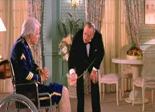

| Dirty Rotten Scoundrels/B+,B |
| MGM/1988/110/ANA 1.85 |
The battle for king of the hill
in the French Riviera playground of Beamont sur Mer is sheer delight.
Frank Oz's fleet-footed flick from a Dale Launer (My Cousin Vinny)
script has more twists and turns than a French Riviera mountain road.
British resident Lawrence Jamieson makes a lordly living charming
rich women into generous contributions for various dubious patriotic
causes. With the chief of police in his left pocket and a polished
manservant in his right, Jamieson struts through the casinos with the
presence of a wounded diva. When a crude American two-bit gigolo Freddy
Benson arrives on the scene, Jamieson must take steps to insure his
fruitful domain. The result is a non-stop competition with
side-splitting results.
The beautifully frothy
comedy comedy basks in the sunshine of its enticing setting; it makes
your mouth water for a sip of the view and sophistication. Dirty
Rotten Scoundrels is one of those films that delivers belly laughs
on repeated viewings Remarkably, the film provided as many laughs the
recent second time around. The montage bridging is constructed by Frank
Oz like with classical composer precision. There's nary a wasted image.
 |
| The Schauffhausen method. . ©MGM |
Michael Caine is a joy as con man
Laurence Jamieson, the resident king of Riviera cons. Frank Oz makes the most of Caine’s dry
reaction responses to co-star Steve Martin’s nonsense. Caine does more with a
pursed smile and a glint in the eye than most actors accomplish with
obviously labored strokes. He’s really a gifted actor/comedian.
Caine polishes his British upper crust for pure Sterling results. Steve
Martin contrasts the Caine sophistication by polishing his American
brash brass to reflect crude with every ray of the sun. Martin's
best moments are his crudest. The
actor's Freddy
Benson milks the flip side of Caine's Jamieson into a thick lather of
whipped cream. Together, they are delicious. Glenne Headley, formerly
Mrs. John Malkovich,
is quite wonderful as Janet Colgate, the presumed soap heiress. Her awkward, stalk-like presence
adds a lot to the film. She’s had a strange career, never fulfilling
some of the promise that is evident on screen in this daffy truffle of
comic perfection.
Frank Oz directs with obvious joy. He's
generous with his actors, consistently getting the most from them. Oz's
sense of comic timing is evident; no scene drags on too long, yet the
comedy always enough air to breath freely. The score tracks the action
wonderfully as well., perfectly in synch with brash American
Freddie Benson. Michael Balhaus' cinematography is scrumptious
with wonderful lighting complimenting the comedy and adding a
postcard gloss.
Dirty
Rotten Scoundrels in its latest anamorphic DVD incarnation is a great
improvement over the widescreen DVD released by Image a couple of years
ago. It's still not as sharp as it could be, but it's more than adequate
to deliver every yummy moment of hilarity. Black levels are very nice.
Black tie fabrics get a nice luster without losing clothing detail.
Night shots are glossy. Color saturation is consistently satisfying. A
nice range of suntans is produced with natural effect. Dialogue is
delivered with clean precision and music floats delightfully around the
action in the Dolby Digital 2-channel surround mix.
Frank Oz has recorded an audio commentary, recording his memories of
making Dirty Rotten Scoundrels. Thanks, Frank, for your
generosity in sharing anecdotes and technical specifics about the
production. It's thirteen years since Oz has seen the film and it's
wonderful to hear his laughter as he watches some of the scenes. Oz is
generous with credit for the film. Balhaus is responsible for defining
the look of the film with his cinematography. Steve Martin is given many
nods for his improv work. Oz's brief treatises on successful comedy are
especially good "The tone is kind of an agreement with the
audience. If you set the right tone, you can do a lot of stuff. If you
set the tone and then you change tone, then it kind of throws the
audience."
Jou Du/A,B-

A sexy Chinese noir. Bold colors paint stirring emotions in a small provincial town.

Selections from the Feature
Archive include articles on
Akira Kurosawa, Frank
Darabont, Blonde
Bimbos, Hollywood
Street Gangs, or Vietnam:
The Hollywood Pariah, and many more....

Catch the Hollywood take on
Blonde Bimbos by clicking on the image above.


Glenn Erickson's insightful DVD reviews have been a Internet fixture for
several years. Check out some of his sophisticated feature articles.
Currently hosted by DVD Talk.

ISF Monitor
Calibrations in the Tristate New York area. Lots of hardware info
and frequent hardware peaks from video expert Kevin Miller. They may be
judgmental, but that's the point, isn't it. Lots of DVD reviews plus
news and more.

MRQE
Find reams of movie and DVD
reviews at the Movie Review Query Engine, a index of reviews appearing
on the Internet.

Mystery writer Fred Hunter digs into classic
films on DVD. Check out his insightful reviews at The
Classics on DVD.

Michael Douglas in Falling Down, looks quizzically at Robert Duval: 'You mean, I'm the bad guy'